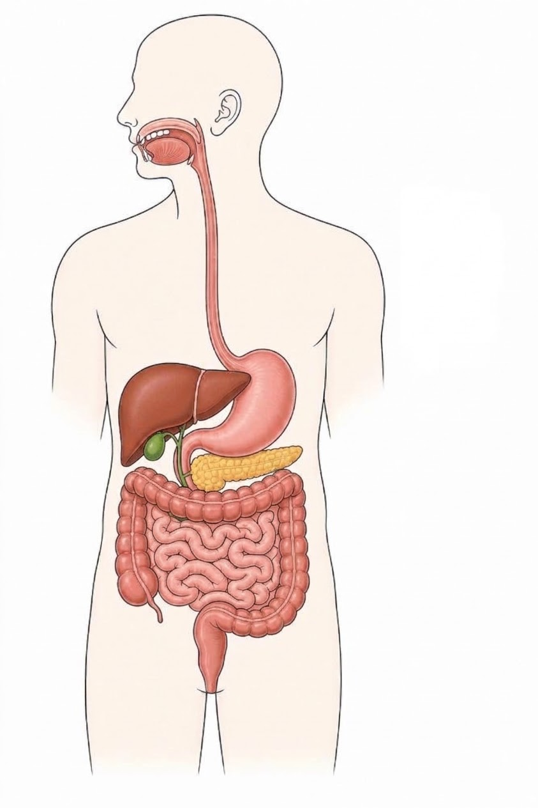

講解速率:
⏱️
生理雙時基計時器
00 小時 00 分 00 秒
真實1秒 = 生理1秒 (口腔)
狀態：準備中

🖼️
尚未找到 digestive.jpg
請點選上方「📂 載入底圖」選擇您的無字圖片 6841.jpg
即可精確套用！
💡 點選器官查看重點，啟用「🛠️ 校準模式」可顯現輔助線並自由微調定位點！
1
pH 6.5～7.5 (中性)
口腔 (Mouth)
消化道起點 ‧ 兼具物理與化學消化
🔬 微觀特寫放大示意
澱粉化學水解
🦷 物理性消化 (機械性)
牙齒咀嚼切碎磨細食物，舌頭攪拌讓食物與唾液均勻混合形成濕潤食團。
🧪 化學性消化 (酵素作用)
唾腺分泌唾液，內含「唾液澱粉酶」，可將澱粉初步水解為麥芽糖（雙醣）。
★ 國中會考必考關鍵字
- 澱粉化學消化起點；蛋白質與脂質在口腔內完全不進行化學分解。
- 酵素活性受酸鹼影響：唾液澱粉酶在接近中性活性最高，進入胃內受強酸作用會失去活性。
🌱 小腸絨毛吸收雙軌機制
會考必背考點
🩸 微血管 (Capillaries)
吸收水溶性養分：
葡萄糖
胺基酸
維生素 B、C
水與無機鹽
路徑：絨毛微血管 → 肝門靜脈 → 肝臟 → 下腔靜脈
🧈 乳糜管 (Lacteals/淋巴管)
吸收脂溶性養分：
脂肪酸
甘油
維生素 A、D、E、K
路徑：乳糜管 → 淋巴管 → 胸管 → 靜脈